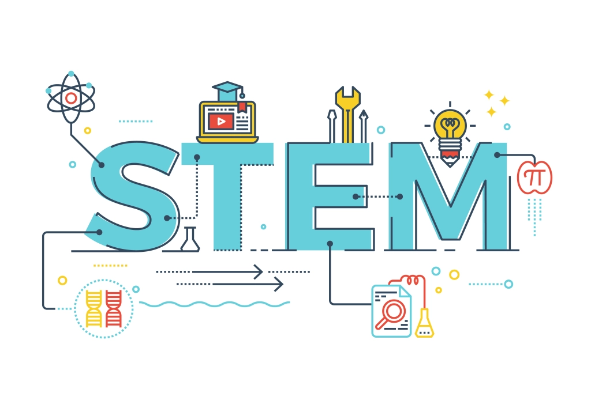
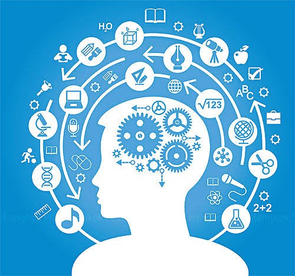

Rosales National High SchoolRosales National High School
Rosales National High SchoolRosales National High SchoolHome About Faculties Academic Tracks TVL Tracks Events Log out
|  |  |
|---|
Humanities and Social Sciences is a strand offered to senior high school students under the Academics track. The HUMSS Senior High School strand is designed for students who intend to take up journalism, communication arts, liberal arts, education, and other social-science related courses in college.
Science:
* BS Nursing.
* BS Medical Technology.
* BS Pharmacy.
* BS Food Technology.
* BS Environmental Science.
* BS Chemistry.
Information and Communications Technology:
* BS Entertainment and Media Computing.
* BS Information Science.
* BS Data Science.
* BS ESports.
* BS Information Technology.
Engineering:
BS Materials Engineering.
BS Electronics and Communications Engineering.
BS Chemical Engineering.
BS Mechanical Engineering.
BS Geodetic Engineering.
Mathematics:
* BS Applied Mathematics.
* BS Mathematics.
* BS Statistics.
* BS Secondary Education (major in Mathematics).
all credits goes to bukas.ph
* Medical doctors.
* Dentists.
* Health Care Professionals.
* Engineers.
* Scientists.
* Agriculture.
* Statisticians.
* Architects.
* Computer Technicians.
* Welders.
* Machinists.
* Manufacturing Technologists.
* Electricians.